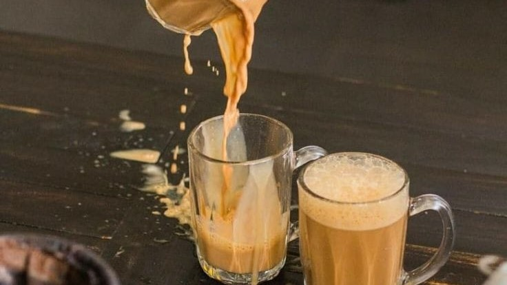

Teh Tarik
Bahan
- 4 Sdm Teh Bubuk
- 4 Sdm Gula Pasir
- 2 Sdm Krimer
- 2 Sdm Susu Kental Manis
- 1 Ruas Kayu Manis
- 600 mL Air
Cara Membuat
- Masukan teh, gula pasir dan kayu manis;aduk rata. Untuk teh, saya pakai racikan; silahkan pakai teh bubuk biasa saja.
- Masukan air dan masak hingga mendidih. Tunggu hingga dingin / hangat, pindahkan dalam wadah.
- Campurkan skm dan juga krimer, aduk hingga merata.
- Supaya keluar buih busa, bisa pakai hand blender atau pindahkan dulu kedalam botol & kocok manual.
- Siap dihidangkan & selamat mencoba!